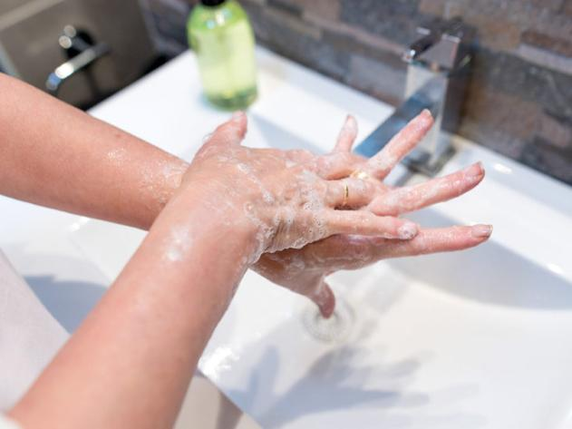
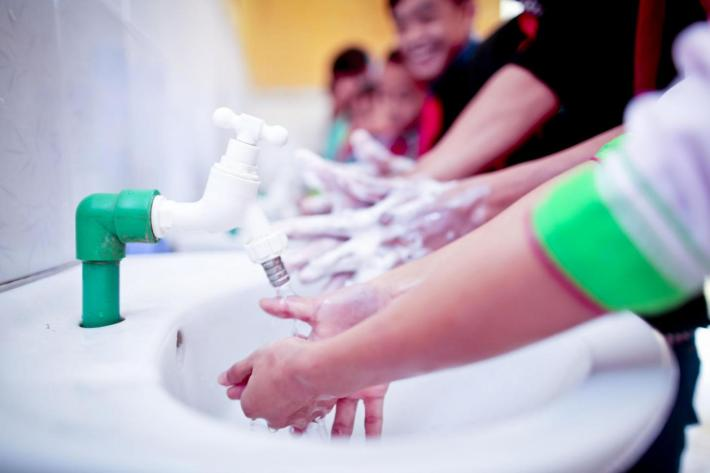

-

Step 1
According to the CDC, washing your hands is particularly important to help prevent the spread of many types of illnesses, including the new coronavirus known as SARS-CoV-2. Learn how to wash your hands properly to help keep yourself and others healthy.
-

Step 2
During global pandemic washing your hands can protect you and your loved ones.
-

Step 3
Handwashing is one of the best ways to protect yourself and your family from getting sick. Learn the 5 handwashing steps and key times to wash your hands to stay healthy.